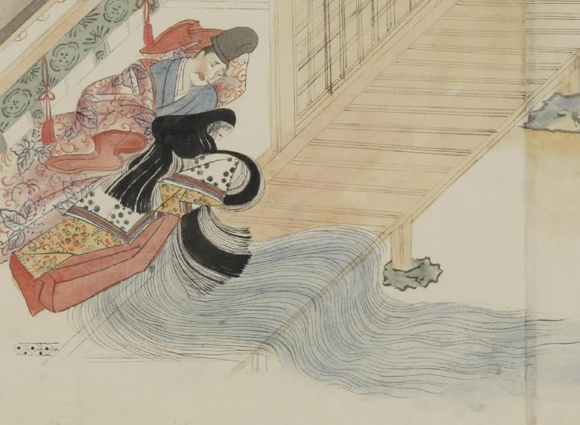

溶けて水になる女。長い髪を垂らし、女房装束をまとい、うつむけになっている。身体の腹側から床、縁側、庭に向けて、大量の水が流れ出ている。女のものと思われる上着をかけた長谷雄が、左側に寄り添っている。
著作者：村田嘉言写／出典：親書誌：U426_nichibunken_0062：中納言長谷雄卿圖巻；チュウナゴンハセオキョウエマキ／日付：2007／資源識別子：U426_nichibunken_0062_0002_0000
Copyright (c)2010- International Research Center for Japanese Studies, Kyoto, Japan. All rights reserved.